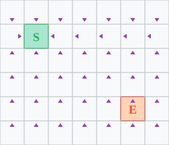

Week 6, Monday
February 9, 2026
Last week, we explored a maze using different containers:
| Container | Order | Behavior |
|---|---|---|
| Bag | Random | Chaotic |
| Stack | LIFO | Go deep, backtrack |
| Queue | FIFO | Explore by distance |
Today: What made this work, and where else can we use it?
Adapted from Jeff Erickson’s Algorithms
The algorithm structure is always the same.
Three things change:
| Question | Your answer |
|---|---|
| What is a state? | |
| What are the neighbors of a state? | |
| What bag should I use? | |
| What do I need to track? | |
| When do I mark visited? | |
| When do I stop? |
| Bag Type | Name | Behavior |
|---|---|---|
| Stack | Depth-First Search | Go deep, backtrack |
| Queue | Breadth-First Search | Explore by distance |
| Priority Queue | Best-First Search | Explore by “goodness” |
| Question | What to track |
|---|---|
| “Can I reach X?” | visited (set) |
| “How far is X?” | distance (dict: state → int) |
| “What’s the path to X?” | parent (dict: state → state) |
| “When did I discover X?” | discovery_time (dict: state → int) |
| “When did I finish X?” | finish_time (dict: state → int) |
The question determines the data structures.
Two choices:
Option A (our version today): Each state enters bag once.
Option B: Each transition adds to bag once (so states can appear multiple times).
The “thing” in the bag is whatever describes where you are:
| Domain | State (the “thing”) |
|---|---|
| Maze | Room number |
| Grid | (row, col) position |
| Social network | Person |
| Tower of Hanoi | Configuration of all disks |
| Word ladder | Current word |
State = everything needed to know “where am I now?”
The neighbors(state) function says what’s reachable in one step:
| Domain | Neighbors of state |
|---|---|
| Maze | Rooms connected to current room |
| Grid | Cells adjacent to (row, col) |
| Social network | Friends of current person |
| Tower of Hanoi | Configurations after one valid move |
| Word ladder | Words differing by one letter |
The problem defines what “one step” means.
How do we find the shortest path from S to E in a grid?
Let’s fill out our checklist…
| Question | Answer |
|---|---|
| What is a state? | (row, col) position |
| What are the neighbors? | |
| What bag? | |
| What do I track? | |
| When mark visited? | |
| When do I stop? |
A state is a cell: (row, col).
| Question | Answer |
|---|---|
| What is a state? | (row, col) position |
| What are the neighbors? | 4-connected |
| What bag? | |
| What do I track? | |
| When mark visited? | |
| When do I stop? |
From (r, c), neighbors are (r±1, c) and (r, c±1).
We want shortest paths.
The distance from A to B is the minimum number of steps.
How do we explore in order of distance?
When we use a queue:
This is Breadth-First Search (BFS).
Observe: When BFS discovers a state, the recorded distance is the shortest path distance.
Why?
| Question | Answer |
|---|---|
| What is a state? | (row, col) position |
| What are the neighbors? | 4-connected adjacent cells |
| What bag? | Queue (FIFO) → BFS |
| What do I track? | |
| When mark visited? | |
| When do I stop? |
Queue gives us shortest paths!
| Question | Answer |
|---|---|
| What is a state? | (row, col) position |
| What are the neighbors? | 4-connected adjacent cells |
| What bag? | Queue (FIFO) → BFS |
| What do I track? | distance dict, parent dict |
| When mark visited? | |
| When do I stop? |
distance: how far is each cell?parent: how do I get there? (for path reconstruction)| Question | Answer |
|---|---|
| What is a state? | (row, col) position |
| What are the neighbors? | 4-connected adjacent cells |
| What bag? | Queue (FIFO) → BFS |
| What do I track? | distance dict, parent dict |
| When mark visited? | When adding to queue |
| When do I stop? |
Mark visited when adding → each cell enters queue once.
| Question | Answer |
|---|---|
| What is a state? | (row, col) position |
| What are the neighbors? | 4-connected adjacent cells |
| What bag? | Queue (FIFO) → BFS |
| What do I track? | distance dict, parent dict |
| When mark visited? | When adding to queue |
| When do I stop? | Goal found (or queue empty) |
Checklist complete! Now let’s write the code.
from collections import deque
def bfs(grid, start, end):
rows, cols = len(grid), len(grid[0])
distance = {start: 0}
parent = {start: None}
queue = deque([start])
while queue:
r, c = queue.popleft()
if (r, c) == end:
return distance, parent
for nr, nc in neighbors(r, c, rows, cols):
if (nr, nc) not in distance:
distance[(nr, nc)] = distance[(r, c)] + 1
parent[(nr, nc)] = (r, c)
queue.append((nr, nc))
return distance, parent
Each arrow points to parent: the cell that discovered it.
Use a stack to reverse the parent pointers!
Two design decisions:
Help Donkey find the shortest path to Dragon’s castle!
Complete the activity in PL to solve the puzzle!
Donkey must deliver a love letter to Dragon through mountainous terrain.
aabqponm
abcryxxl
accszzxk
acctuvwj
abdefghi(heights: a=0, b=1, …, z=25)
From height h, you can step to a neighbor with height at most h + 1.
a (height 0): can reach a or bc (height 2): can reach a, b, c, or dz (height 25): can reach anything!This changes what “neighbors” means.
Question: Starting from S, how many locations can the messenger reach in at most 10 steps?
This is BFS with a step limit.
Question: What is the shortest path from S to E?
This is BFS for shortest path.
(Stop when we reach E, return the distance.)
Donkey wants to start from a valley—but which one?
Question: Which a cell has the shortest path to Dragon’s castle E?
Option 1: Run BFS from every a cell, take minimum. (Slow if there are many a cells!)
Option 2: Run BFS backwards from E.
a cell is closestForward edge (A can reach B): - From height h, can step to height ≤ h + 1
Backward edge (who can reach me?): - From height h, can step to height ≥ h - 1
Same algorithm, different neighbor function!
Both problems use the same BFS template:
Only the neighbor function changes!
| Problem | “State” | Neighbors |
|---|---|---|
| Grid maze | (row, col) | Adjacent cells |
| Word ladder | “COLD” | Words 1 letter away |
| Tower of Hanoi | Disk positions | Valid moves |
| Rubik’s cube | Cube state | Single rotations |
| Social network | Person | Friends |
If you can define neighbors, you can search.
The same algorithm works everywhere:
BFS with a queue finds shortest paths!
In lab this week, you’ll implement: